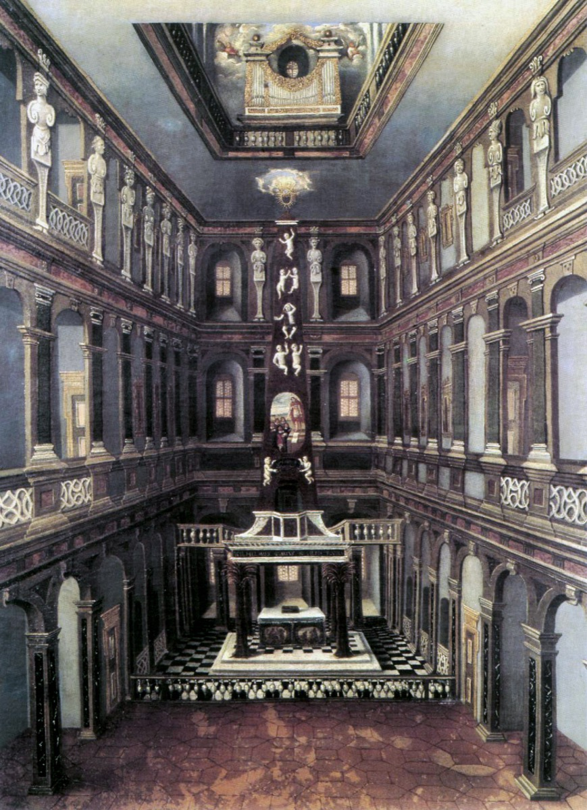

Weimar, Duchy of Saxe-Weimar

The town then. A small ducal residence (~5,000 people) with outsized pretensions to piety and culture — Duke Wilhelm Ernst's court preached, schooled, and regulated; the later Weimar of Goethe and Schiller inherited its institutions. For Bach it meant a proper court Capelle, a serious chapel, and courtly working conditions in both senses: security and servitude.
The Himmelsburg. The palace chapel (Schlosskirche), nicknamed "Heaven's Castle": a tall, narrow space with the organ and musicians' gallery set in an opening at the very top of the ceiling — the Capelle performed from the heights, sound floating down. Almost all the Weimar cantatas were written for this vertical acoustic (small forces, intimate scale — compare the civic breadth of Leipzig). The chapel burned in 1774; paintings preserve it.
The two palaces. The Wilhelmsburg (Wilhelm Ernst's seat, with the Himmelsburg) and, a few streets away, the Rote Schloss (Red Palace) of co-duke Ernst August — the feud between them defining court life (see the event).
What survives today. The palace ensemble stands (rebuilt); the Bastille gatehouse — including, by tradition, the detention rooms where Bach spent November 1717 — survives. Weimar's Bach sites are overshadowed by its Goethe industry: fitting for the city that jailed him.
Wolff, The Learned Musician, ch. 6
Gardiner, Music in the Castle of Heaven, ch. 4
→ full bibliography & links